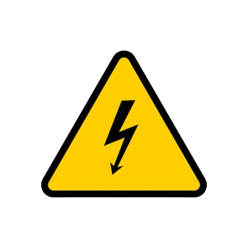
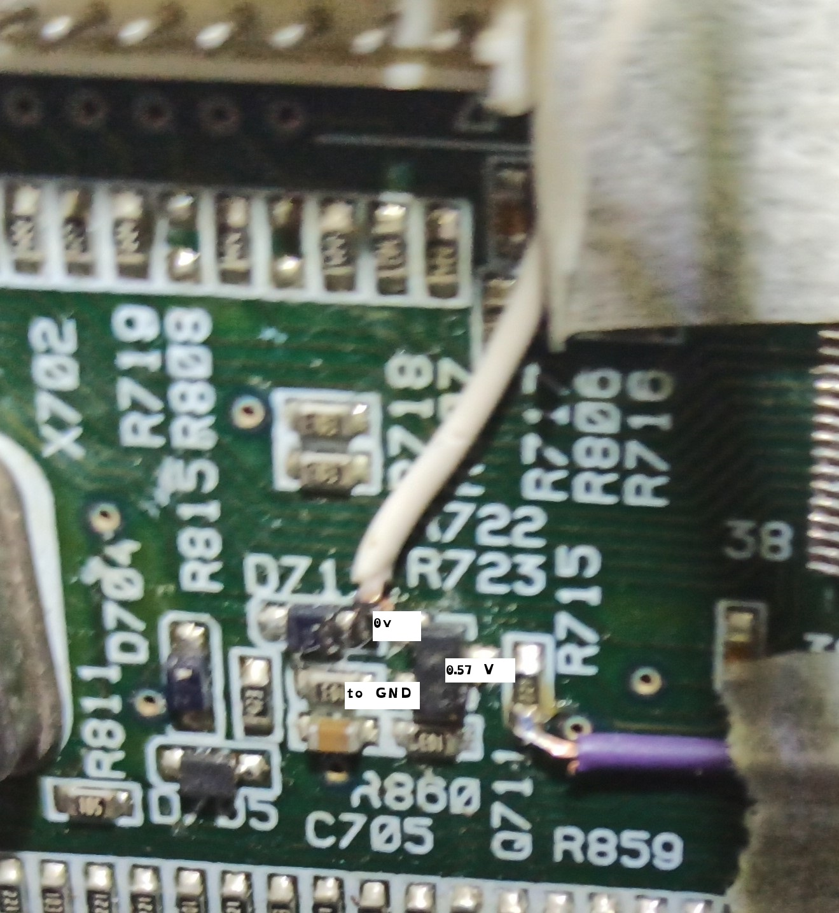
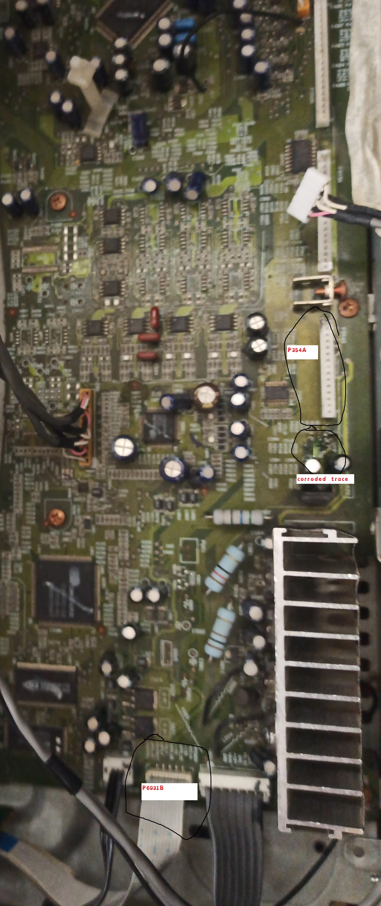
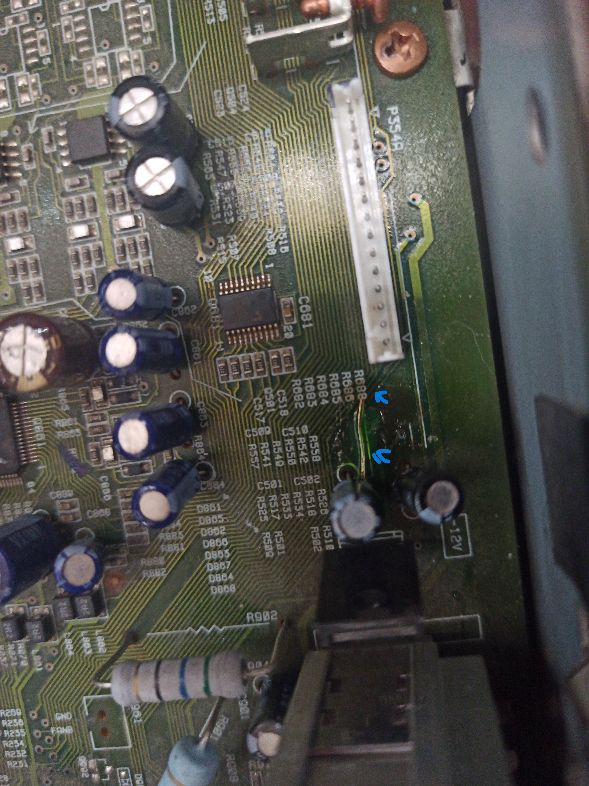
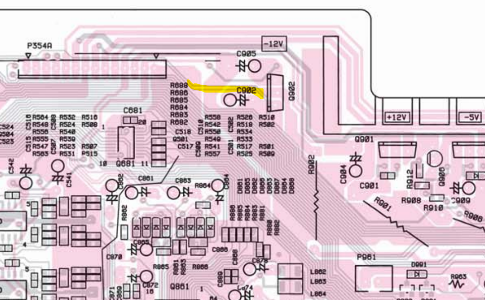
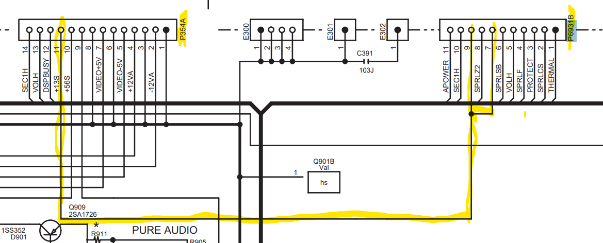

This is some text in a div element.

Always be careful when opening up ElectronicsAn AV receiver from 2005 that was not workingwith no sense of life and the model is an Onkyo TX-SR 602 E
Firstly we will identify what are the exact symptoms are
now with that information we can conclude where should we start looking for problems
now before we start we will grab a copy of the service manual
I personally like elektrotanya to get a service manuals for devices
after we open up the receiver here's what we will check first
the after looking at the above and seeing that everything is working as it should be
now we check for standby voltage with a multimeter
will we see the U5 board that is responsible for standby voltage/power
after seeing the scamatic for the board we see a certain connector that we need to have 10 voltage we will see pin "+10vs and +10vss"
after continuing to follow the scamatics to the 10 voltage line we will end up in a Power supply section after that we go to the Preamplifier section and there we have a board that on it has some connectors that connects to the microprocessor bord
here we have a convenient FIRMWARE WRITING PORT that lets us communicate directly with the cpu (the renesas (M16C/62P) M30627FHPGP) of the receiver
after useing UART and realterm we can conclude with that the microprocessor it halting immediately after a reset has been done on the microprocessor
now we take some measurements on the microcontroller board
| Onkyo cap test measurements | ||
|---|---|---|
| TIME | sat | v |
| 16h:12m:51s | not on power | 3.587v |
| 16h:13m:02s | not on power | 3.587v |
| 16h:13m:03s | on power | 4.713v |
| 16h:13m:10s | on power | 4.772v |
| 16h:13m:40s | on power | 4.812v |
| 16h:25m:28s | on power | 4.935v |
| 16h:45m:47s | on power | 4.940v |
| 16h:45m:54s | on power | 4.940v |
| 16h:55m:54s | not on power | 4.885v |
| 16h:57m:00s | not on power | 4.874v |
| 16h:57m:44s | not on power | 4.857v |
| 16h:58m:00s | not on power | 4.851v |
| 16h:58m:05s | not on power | 4.829v |
after seeing the table upvoe we can conclude that we have capacitor degradation this gives usa clue to what have may happened
after taking a carefully look at the microprocessors diagram we find a pin with the name POFF that connects to a transistor that when the line goes LOW it signals to the cpu that there has been a POWER FAILRE and therefore to halt the cpu
after measuring the transistor

we see at the input of PFF its 0.57 volts that means the transistor has sent a signal to the cpu low so that means the cpu halting
now we need to find out why
when we started tracing the traces of the transistor line sand we will we will end up at the connector at the microprocessor bord that needs 13 volts input to wind up in the transistor
after seeing that there is no voltage going to that certain pin for the transistor we go back a board and go to the preamplifier bord from before and we see near some capacitors some suspicious substance the after taking more carefully we see that a corrosion has happened to the traces due to a capacitor leaking we will now repair that trace and will try again
the after repairing the trace and replacing some capacitors we see that the transistor now doesn't pull pull low letting the cpu of the receiver continue as normal in this the receiver goes properly into standbyand with that we have fixed the receiver




ADD VID AND AUDIO HERE HE WHAT DO ADD FROM TEST.TXT !!!!!!!!!!!!!!!!!!!!!!!!!!!!!!!!!!!!!!!!!!!!!!!!!!!!!!!!!!!!!!!This is some text in a div element.